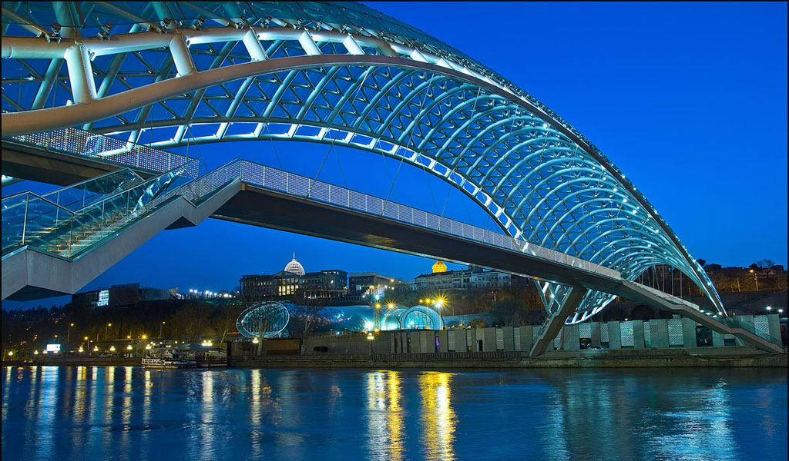

×

Georgia
Климат
На западе субтропический, на востоке - переходный от субтропического к умеренному. На всей территории страны климатическая обстановка осложнена влиянием гор, но так как большая часть хребтов идет с запада на восток, даже в самых отдаленных районах заметно влияние теплых черноморских воздушных масс.
Средние температуры января составляют от +3-9 С на Колхидской низменности и в Аджарии, до -2 С в Иверийской впадине. В горных районах Сванетии и Джавахети температура зимой может опускаться до -16-20 С. Лето жаркое и продолжительное - средняя температура августа почти на всей территории страны составляет от +23 С до +26 С.
Осадки выпадают достаточно равномерно в течение всего года с небольшими максимумами осенью и зимой. В Имерети и Аджарии в год выпадает от 1000 до 2800 мм. осадков, в Кахетии и Джавахети - 300-600 мм. В горных районах снег выпадает в ноябре и устойчиво держится до марта-апреля.
____